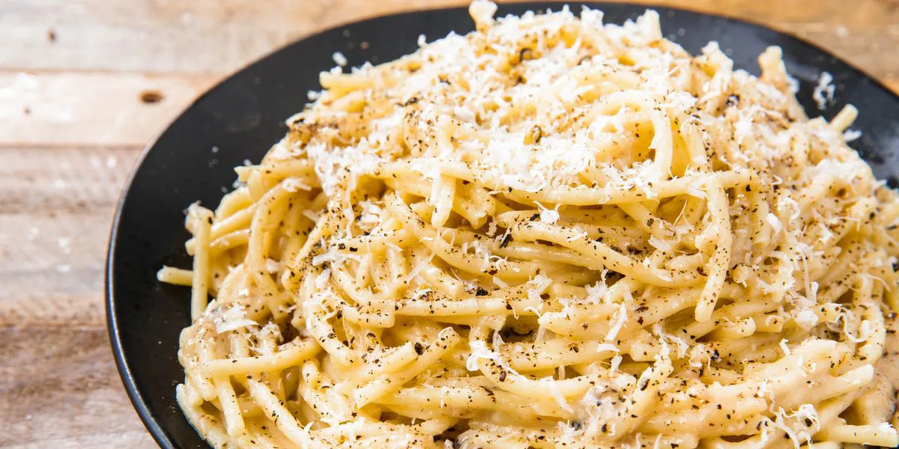

Cacio e Pepe

Description
The Easiest and Cheesiest Spaghetti Imaginable. The secret? Toasting the black pepper!
Ingredients
- 225 g spaghetti
- 2 tbsp butter
- 1 tbsp olive oil
<1i>1.5 cups grated parmesan
Instructions
- In a large pot of boiling salted water, cook pasta until al dente according to package directions. Reserve ⅔ cup pasta water before draining.
- In a large skillet over medium heat, melt 1 tablespoon butter with oil. Add a generous amount of black pepper and toast until fragrant, about 1 minute.
- Add ⅓ cup reserved pasta water and bring to simmer. Whisk in remaining 1 tablespoon butter and, using tongs, add pasta, tossing into butter mixture.
- Add cheese and a generous seasoning of pepper and toss constantly until cheese is melty, removing skillet from heat when about half the cheese has melted. (If sauce is too thick, loosen with more pasta water.)
- Serve topped with more Pecorino and Parmesan.